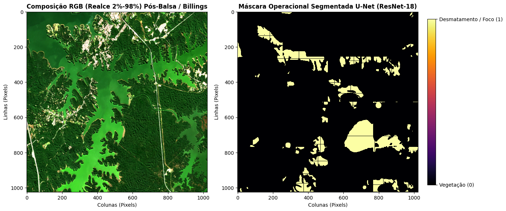
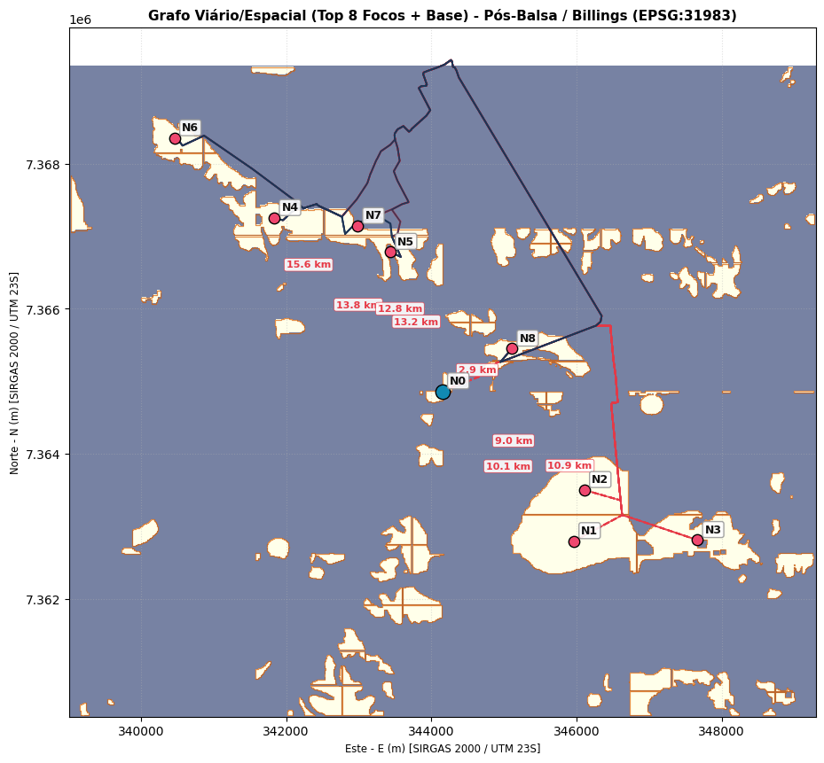
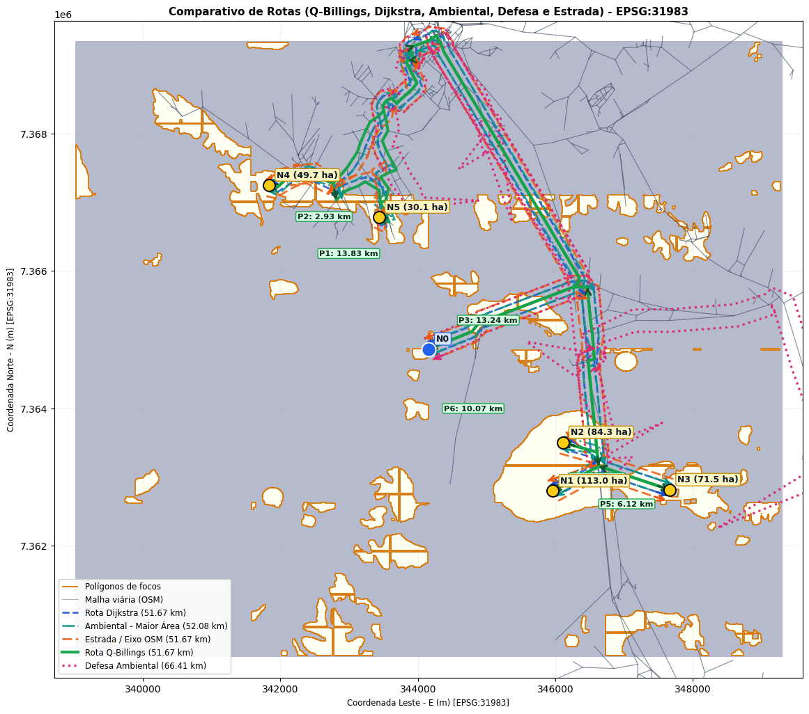

Monitoramento Orbital de Mananciais e Roteamento Quântico na Represa Billings
Pipeline aberto em três fases que integra segmentação semântica por Deep Learning (Sentinel-2 + U-Net/ResNet-18 + NDWI), grafo viário real do OpenStreetMap e otimização combinatória via QUBO/QAOA para patrulhamento ambiental no Pós-Balsa, em São Bernardo do Campo (SP).
FATOR_FALLBACK explícito01. Território e Gargalo Operacional
ODS 6 · ODS 15 · APRM-BILLINGSContraste Urbano-Ambiental em São Bernardo do Campo
Enquanto o norte de São Bernardo do Campo concentra o eixo urbano e industrial consolidado, a porção sul — especialmente a região do Pós-Balsa — abriga remanescentes contínuos de Mata Atlântica e os braços da Represa Billings, manancial estratégico protegido pela APRM-Billings e pelas Áreas de Preservação Permanente (APPs).
Três Barreiras na Fiscalização Terrestre
- Detecção tardia: área extensa, densa e recortada pela represa dificulta inspeções pontuais contínuas.
- Mapas incompletos: linhas retas ignoram braços d'água e estradas vicinais não mapeadas geram trajetos irreais.
- Perda de eficiência: sequenciamento empírico eleva quilometragem, tempo de resposta e gasto de combustível.
02. Arquitetura Híbrida e Evidências Visuais
SIRGAS 2000 / UTM 23SDetecção Orbital com IA e Filtro Hídrico
Identifica áreas candidatas a supressão vegetal ou alteração de cobertura do solo a partir de imagens multiespectrais orbitais, eliminando falsos positivos causados pelos espelhos d'água recortados da represa.
- Aquisição STAC: cenas Sentinel-2 L2A (bandas B02, B03, B04 e B08 a 10 m) reprojetadas para
EPSG:31983. - Segmentação Semântica: rede neural
U-Netcom codificadorResNet-18aplicada em patches de256×256pixels. - Filtro NDWI & Morfologia: supressão de água via
(B03 - B08) / (B03 + B08)e exportação da máscaramascara_desmatamento_billings.tif.

Separação entre vegetação íntegra, braços hídricos filtrados via NDWI e manchas candidatas de degradação.
Geoprocessamento e Grafo Viário Real
Converte a máscara raster em alvos georreferenciados mensuráveis e modela os deslocamentos terrestres sobre a malha viária real do OpenStreetMap sem atravessar corpos d'água artificialmente.
- Vetorização Métrica: polígonos via
GeoPandasemEPSG:31983, cálculo de área em hectares e centroides (N1aN8) + baseN0. - Rede Viária Real: topologia extraída via
OSMnxeNetworkX(1.243nós e3.049arestas) com ancoragem (snap) em até250 m. - Penalidade Off-Road: trechos sem estrada mapeada recebem aresta auditável ponderada por
FATOR_FALLBACK = 3,5, gerando a matriz de custos em km.

Traçado sobre a malha viária real contornando a represa em EPSG:31983 com distâncias acumuladas e fallback explícito.
Otimização de Rotas e Apoio à Decisão
Formula o circuito fechado de fiscalização — partindo da base N0, visitando os focos prioritários
e retornando à base — como um problema combinatório resolvido via computação quântica variacional.
- Formulação QUBO / Ising: modelagem TSP com restrições quadráticas de unicidade convertida para operadores Pauli-Z.
- Solver QAOA (Qiskit): execução com
QAOAAnsatz,StatevectorEstimator,StatevectorSamplere otimizador clássicoCOBYLA. - Validação Multi-Cenário: confronto direto contra Dijkstra exato, priorização por área degradada e circuito estendido.

Comparação visual entre a Rota Q-Billings (51,673 km), priorização por área (52,084 km) e defesa ambiental (66,415 km).
03. Mapa Interativo — Pós-Balsa / Represa Billings
LEAFLET · CARTOGRAFIAN0) e os focos prioritários (N1 a N5) na região do Pós-Balsa em São Bernardo do Campo antes de conferir os números detalhados abaixo.
04. Comparativo Quantitativo das Rotas
ESTUDO DE CASO · PÓS-BALSA| Estratégia / Cenário | Sequência de Visitação | Extensão Total | Diferença vs. Q-Billings | Critério Operacional |
|---|---|---|---|---|
| 1. Rota Q-Billings (QUBO / QAOA) | N0 → N4 → N5 → N2 → N3 → N1 → N0 | 51,673 km | 0,000 km (Ref.) | Menor percurso global validado por otimização quântica |
| 2. Rota Dijkstra (Clássico Exato) | N0 → N4 → N5 → N2 → N3 → N1 → N0 | 51,673 km | 0,000 km | Benchmark exato sobre o mesmo grafo ponderado |
| 3. Ambiental — Maior Área Degradada | N0 → N1 → N5 → N2 → N3 → N4 → N0 | 52,084 km | +0,411 km | Prioridade imediata ao maior foco (N1: 113,0 ha) |
| 4. Defesa Ambiental (Circuito Estendido) | Cobertura ampliada de perímetro | 66,415 km | +14,742 km | Patrulhamento preventivo de longo alcance |
Simulador de Economia Operacional em Campo
Ajuste o número de rondas mensais da fiscalização ambiental para estimar a redução acumulada de quilometragem ao adotar a Rota Q-Billings (51,673 km) frente ao circuito estendido (66,415 km).
05. Reprodutibilidade e Próximos Passos
OPEN SOURCE · MIT / CCArtefatos Disponíveis no Repositório
- Notebooks parametrizados para Google Colab e execução local em Python.
- Máscara raster georreferenciada (
mascara_desmatamento_billings.tif) e camadas GeoJSON. - Matriz simétrica de distâncias reais e mapas interativos em HTML (Folium) e estáticos em
EPSG:31983.
Evolução e Escalabilidade
- Bases Oficiais em Cache: integração contínua com alertas DETER/INPE, MapBiomas e zoneamento da APRM-Billings.
- Mapeamento Colaborativo: enriquecimento de estradas vicinais e acessos de margem no OpenStreetMap.
- Hardware Quântico Real: validação da formulação QUBO/QAOA em processadores IBM Quantum com mitigação de ruído.